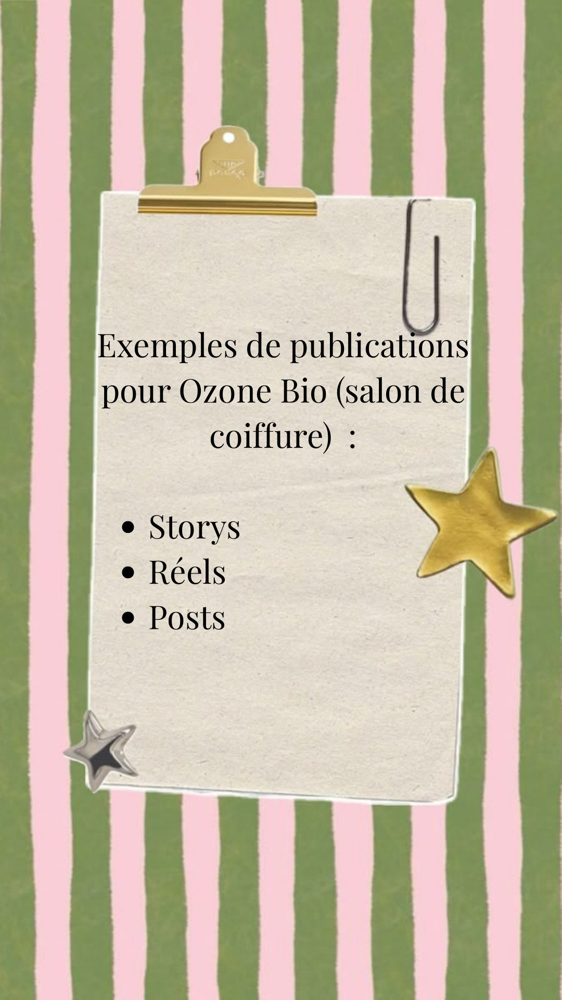

Contenus pour OzoneBio
Stories, posts et jeu concours pour animer le compte Instagram d'un salon de coiffure bio et donner envie de pousser la porte.

Contexte
OzoneBio est un salon de coiffure qui défend une approche naturelle : colorations 100 % végétales, soins adaptés, accompagnement personnalisé. L'objectif était de lui imaginer une présence sur les réseaux sociaux à son image : chaleureuse, utile et vivante.
Objectifs
- Faire connaître le salon et ses valeurs auprès d'une clientèle locale
- Créer de l'interaction avec la communauté (jeux, sondages, questions)
- Donner envie de prendre rendez-vous, en salon ou par message privé
Ma stratégie
J'ai construit une ligne éditoriale à partir de quatre grands piliers : teaser et animation, conseils, fidélisation et dialogue avec la communauté. Chaque format est pensé pour son usage : stories pour l'interaction rapide, posts pour les messages plus durables. Les visuels reprennent une palette naturelle (verts, beiges, rose poudré) pour refléter l'univers bio du salon.
- Canva
- Instagram Stories
- Posts
Contenus créés
1. Teaser & jeu concours
Un teaser daté (« une surprise se prépare ») crée l'attente, puis un jeu concours simple en trois étapes (s'abonner, liker, identifier deux personnes) fait grandir la visibilité du compte. Cette stratégie permet de créer de l'attente, attirer de nouveaux abonnés, augmenter la visibilité du compte et renforcer l'engagement de la communauté grâce à la participation au jeu concours. La révélation du gagnant fixe un rendez-vous précis avec la communauté.


2. Conseils & éducation
Des contenus utiles pour montrer l'expertise du salon : une story « SOS cheveux » qui répond à un problème courant et invite à écrire le sien, puis un challenge de 7 jours pour adopter de bons réflexes (hydratation, soin, protection thermique, brossage…). Le challenge se termine par une invitation à venir au salon ou à écrire en message privé.


3. Notoriété & fidélisation
Une story en forme de conversation SMS met en scène le bouche-à-oreille (« T'as essayé OzoneBio ? »), tandis qu'un post de parrainage encourage les clientes à inviter une proche et à profiter toutes les deux d'un avantage. Cela permet de fidéliser la clientèle en donnant envie aux clientes de revenir, de créer une relation de confiance avec la marque et d'attirer de nouvelles clientes grâce aux recommandations.


4. Dialogue & informations pratiques
Un sondage permet à la communauté de choisir les contenus qu'elle souhaite voir davantage (conseils, transformations, produits, inspirations, coulisses). La grille tarifaire, elle, rassemble les prestations du salon dans un visuel clair et facile à enregistrer.


Résultats & enseignements
- Alterner contenus utiles, interactifs et commerciaux pour ne pas lasser l'audience
- Un rendez-vous daté (teaser, annonce du gagnant) donne une raison de revenir sur le compte
- Chaque publication se termine par une action claire : répondre, participer, réserver
- Une identité visuelle naturelle et cohérente renforce le positionnement bio du salon